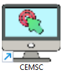
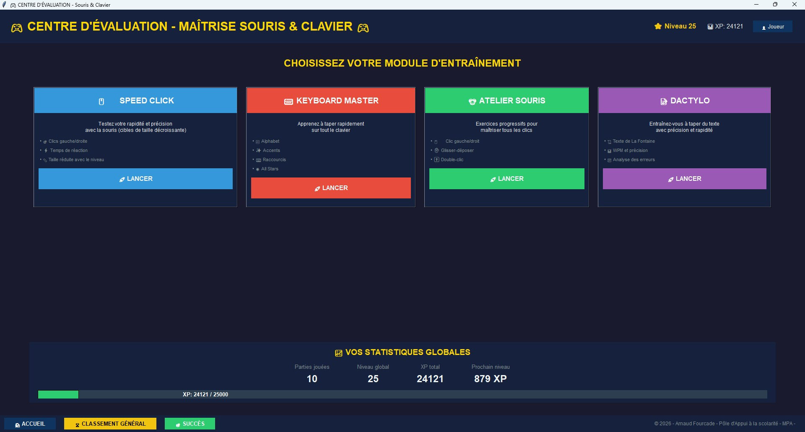

Pour un accès rapide, vous pouvez épingler le programme sur votre Bureau :
Vous pouvez également faire un clic droit sur CEMSC.exe et sélectionner "Créer un raccourci", puis déplacer ce raccourci où vous le souhaitez.
Les profils, scores et statistiques sont automatiquement enregistrés dans le dossier :
%LOCALAPPDATA%\CentreEvaluation
(accessible en copiant ce chemin dans l'explorateur de fichiers). Vous pouvez donc déplacer le programme ou le raccourci sans perdre votre progression.
Testez votre rapidité et précision avec des cibles de taille décroissante. Clics gauche/droite, combo et bonus de rapidité.
Apprenez à taper rapidement sur tout le clavier : alphabet, accents, ponctuation, raccourcis et mode All Stars.
Exercices progressifs : clic gauche, clic droit, double-clic et glisser-déposer. Parfait pour débutants.
Entraînez-vous à taper du texte avec la célèbre fable de La Fontaine. WPM, précision et analyse des erreurs.
Créez plusieurs profils et suivez la progression de chacun.
Débloquez des succès et gagnez des badges pour vos performances.
Heatmap du clavier, précision, WPM et classement général.
Design sombre, animations fluides et mode plein écran (F11).
Windows 10 ou 11 • 2 Go RAM • Résolution 1024x768 • Aucune installation requise